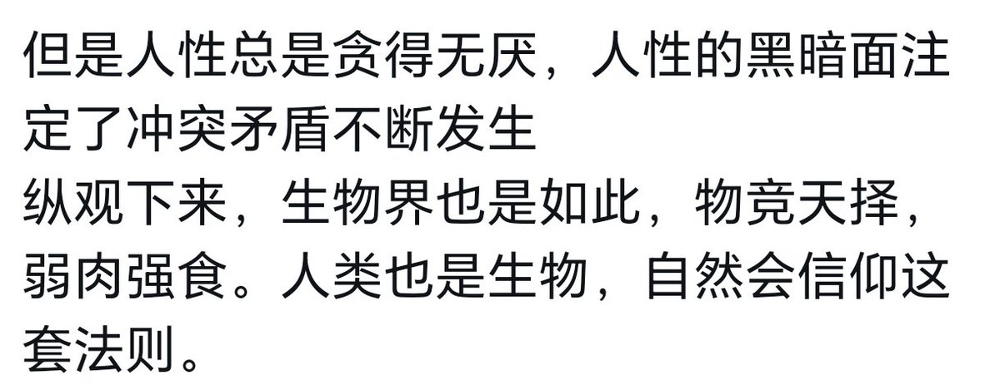

星野ふじ
@hoshinofujivy
@Milifo363999 这本质上还是人性啊

Milifo 咲樂团
@Milifo363999
@hoshinofujivy 吼吼吼夸脏哦，这里还有人性论看的
不发展军事不爱国就没有战争了，吼吼吼这里也有原始主义看的哦
坏是良好的反面但是也有相关，叛徒是忠诚的反义词，但是叛徒从一个组织跑出来之后往往要像其他势力保持忠诚。
人发展，人合作，人有组织，组织给人利益，人喜欢组织，组织不能反应人的利益，人离开。 https://t.co/HASLykguM7